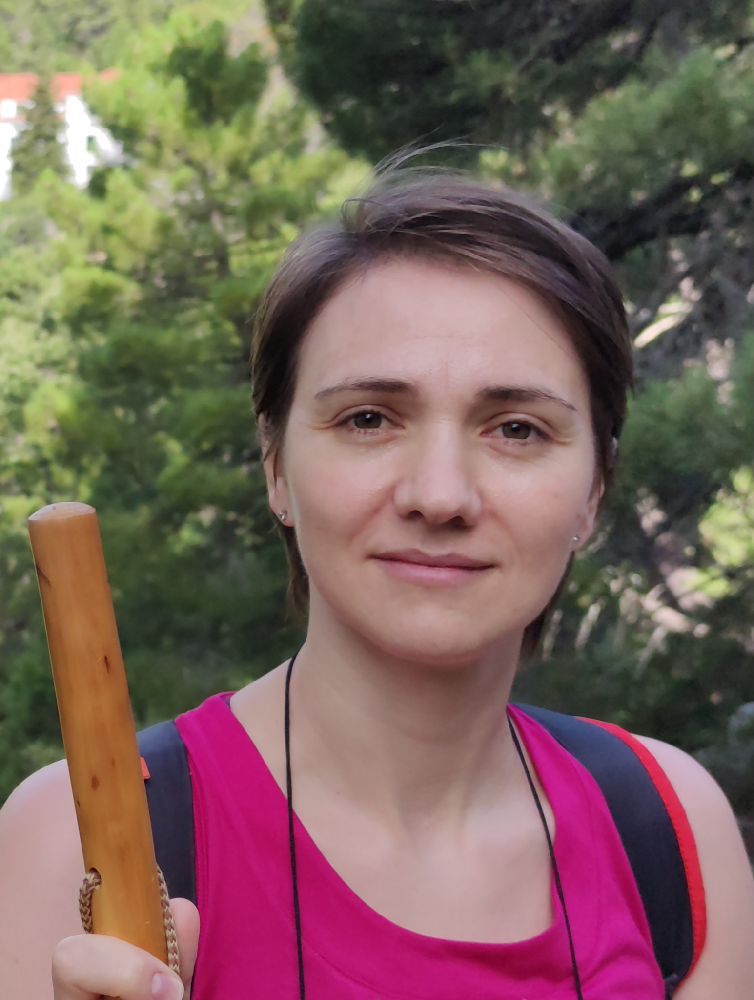

AUTORES:

Alejandra García Mosquera
DATA SCIENTIST

Jorge Gómez Marco
DATA SCIENTIST
Ana Hernández Villate
DATA SCIENTIST
Alex Ilundain
DATA SCIENTIST
Alicia María López Machado
DATA SCIENTIST

Lena Morianu
DATA SCIENTIST